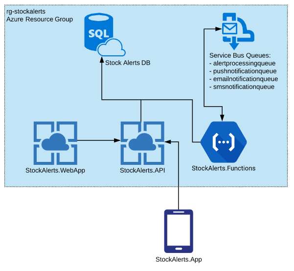

Moving from HTTP-Triggered Azure Functions to Web API (Update 2019.07.09)
This past weekend was a long one due to the Fourth of July, and despite a weekend filled with cookouts, swimming, fireworks, an anniversary date night, and a trip to St. Louis, I was able to knock off an important task on my side project‘s TODO List.
Refactoring HTTP-Triggered Azure Functions into a Web API Service
When I started work on Stock Alerts, I began with the Azure Functions for retrieving quotes and evaluating alert definitions, because they were the most interesting pieces to me.
I then started thinking about the API endpoints that I’d need to support a mobile client. I figured I wouldn’t need too many endpoints to support the very minimal functionality that I was aiming to implement for MVP, and I already had the Azure Functions project, so I figured I’d just stand up a few HTTP-triggered functions for my API. After all, I could always refactor them into their own proper web API project later.
It was midway through implementing authentication that I realized that rather than continuing to try to fit the endpoints that I needed into Azure Functions, it made sense to move the HTTP-triggered functions into their own web API project with a separate app service in Azure sooner rather than later.
So that’s what I did.
I performed the refactor Thursday/Friday, and fiddled with the build and release pipelines in Azure DevOps in my free moments on Friday/Saturday. Monday morning I switched the app to use the new API.
Thankfully the refactoring of the code was fairly simple because my functions, much like good controller methods, were thin – they simply received the HTTP request, deserialized it, performed any necessary request-level validation, and delegated processing to the domain layer which lives in a separate assembly. The controllers in the Web API project that I created ended up being very similar.
I’m now closer to the MVP infrastructure that I mentioned a week ago, depicted below (I’m just missing StockAlerts.WebApp now):

I love the feeling of checking items off of my TODO list.
Why I Chose Web API Over HTTP-Triggered Azure Functions
So why did I choose to move my API methods from my Functions project to their own Web API project and service?
A few key reasons: 1. Inability to configure middleware for Azure Functions 2. Prefer controller methods over Azure Functions 3. API usage patterns
Let’s talk about these one-by-one…
ASP.NET CORE MIDDLEWARE
ASP.NET Core gives the developer the ability to plug in logic into the request/response pipeline. This logic is referred to as middleware. Andrew Lock has a great post on what it is and how it works in an ASP.NET Core web app.
ASP.NET Core has default middleware that it executes during the normal course of processing a request and response, but it also allows the developer to configure at startup what additional middleware should execute with each request, including custom middleware. Middleware is generally used for performing cross-cutting tasks – things like logging, handling exceptions, rendering views, and performing authentication, to name a few.
Early in my adventures into Azure Functions I learned that the developer doesn’t have the ability to configure the middleware that executes during an HTTP-triggered function invocation. Sure, some folks have rolled their own middleware pattern in Azure Functions (like here and here), but I didn’t want to invest that much effort into building something that an ASP.NET Core Web API gives me for free.
My custom middleware needs aren’t too many: for a typical web API I add custom error-handling middleware and enable authentication middleware.
Though I was able to implement workarounds to accomplish these tasks to work in my functions, they weren’t nearly as clean as accomplishing the same thing with middleware in an ASP.NET Core Web API.
Error Handling
My preferred approach to handling exceptions on recent Web API projects has been to create an ErrorHandlingMiddleware class that catches any unhandled exception during the processing of the request and turns it into the appropriate HTTP response. The code can be found here. Adding it to the pipeline is as simple as one line in Startup.cs:
app.UseMiddleware(typeof(ErrorHandlingMiddleware));
To accomplish similar functionality in my Azure Functions required an additional Nuget package (PostSharp), a custom attribute, and a [HandleExceptions] on top of all of my functions. Not terrible, but I’d rather not have the extra package and have to remember to manually decorate my functions to get error-handling.
Authentication/Authorization
To turn on token-based authentication/authorization for an ASP.NET Core Web API endpoint, you must configure the authentication, JWT bearer, and authorization options in Startup.cs, add the authentication middleware with app.UseAuthentication();, and decorate your controller methods with the [Authorize] attribute.
To implement token-based authentication/authorization on my Azure Functions, there wasn’t an easy way for me to simply decorate a function with an [Authorize] attribute and let the framework make sure that the user could invoke the function. Instead, for each function I had to use AuthorizationLevel.Anonymous and manually check for a valid ClaimsPrincipal and return new UnauthorizedResult() if there wasn’t one.
It worked, but it wasn’t pretty.
Beyond that, I had trouble getting it to add the Token-Expired header on responses when the auth token has expired. After switching over to Web API, this just works with the configuration I have in place.
PREFER CONTROLLERS OVER FUNCTIONS
As I began to add multiple HTTP-triggered functions that manipulated the same server resource, I grouped them into a single file per resource, similar to how controllers are often organized. But even though the methods were grouped like controllers, there were significant differences at the code level that cause me to prefer the controller implementations over the Azure Functions implementations.
Let’s compare the two side-by-side…
Here’s an Azure Function for getting an alert definition by ID:
[FunctionName("GetAlertDefinition")]
[HandleExceptions]
public async Task<IActionResult> GetAlertDefinitionAsync(
[HttpTrigger(AuthorizationLevel.Anonymous, "get", Route = "alert-definitions/{alertDefinitionId}")] HttpRequest req,
string alertDefinitionId)
{
var claimsPrincipal = _authService.GetAuthenticatedPrincipal(req);
if (claimsPrincipal == null)
return new UnauthorizedResult();
var alertDefinition = await _alertDefinitionsService.GetAlertDefinitionAsync(new Guid(alertDefinitionId));
claimsPrincipal.GuardIsAuthorizedForAppUserId(alertDefinition.AppUserId);
var resource = _mapper.Map<Resources.Model.AlertDefinition>(alertDefinition);
return new OkObjectResult(resource);
}
And here’s the analogous controller method for getting an alert definition by ID:
[HttpGet]
[Route("{alertDefinitionId}")]
public async Task<IActionResult> GetAsync(Guid alertDefinitionId)
{
var alertDefinition = await _alertDefinitionsService.GetAlertDefinitionAsync(alertDefinitionId);
HttpContext.User.GuardIsAuthorizedForAppUserId(alertDefinition.AppUserId);
var resource = _mapper.Map<Resources.Model.AlertDefinition>(alertDefinition);
return new OkObjectResult(resource);
}
Observations:
- The controller method is shorter.
- The controller method is able to accept ID parameters as GUIDs, avoiding manual conversion.
- The controller method declares the HTTP verb and route more cleanly (in my opinion) as method attributes rather than a parameter attribute.
- Because I’ve decorated the controller with
[Authorize], the controller method avoids the manual authorization logic. - Because I’m using the
ErrorHandlingMiddleware, the controller method avoids the extra[HandleExceptions]attribute. - Not illustrated in this example, but the controller method accepts request bodies as entities, avoiding having to manually deserialize the request body from the
HttpRequest.
From a purely code aesthetics perspective, I just prefer controller methods over HTTP-triggered functions.
API USAGE PATTERN
I expect the usage pattern of my API to be fairly uniform across the available endpoints and the traffic to ebb and flow predictably with the amount of users using the mobile app. I don’t expect large spikes in traffic to specific endpoints where I would need to be able to scale individual endpoints; if there are large spikes due to a sudden increase in the number of users, I’ll want to scale the whole web API service.
While HTTP-triggered Azure Functions may be the right choice for other use cases, the anticipated usage pattern of the Stock Alerts API aligns much more closely with a Web API service.
I’m still using Azure Functions for pulling stock quotes, evaluating alert definitions, and sending out notifications. Azure Functions are well-suited for these use cases, for the reasons I described here.
Wrapping Up
With this change behind me, I’m ready to continue moving forward working on the mobile app. My mornings the rest of this week will be focused on building the Create Alert Definition screen.
Here’s the repository for the project if you’d like to follow along: https://github.com/jonblankenship/stock-alerts.
Thanks for reading!
-Jon